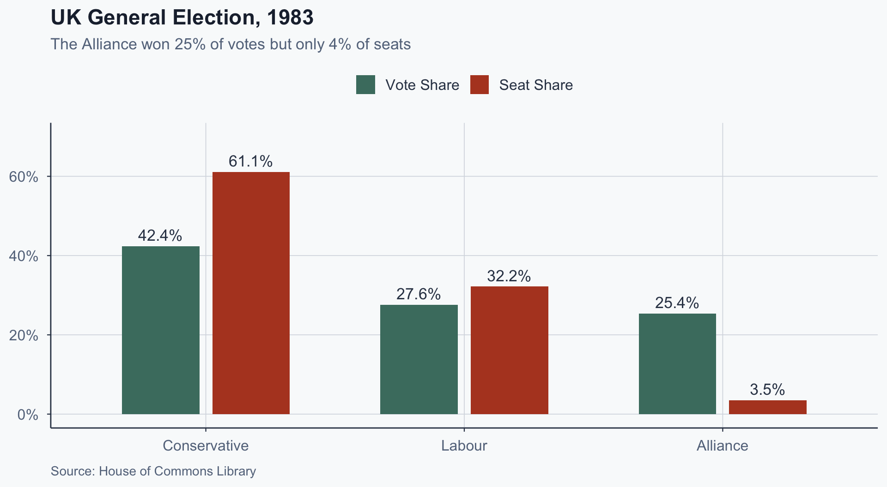
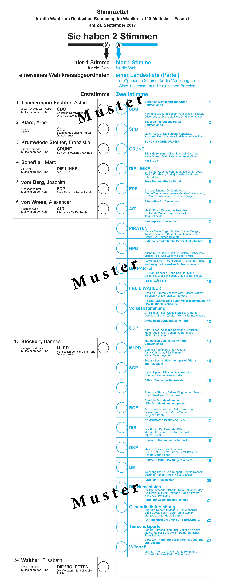
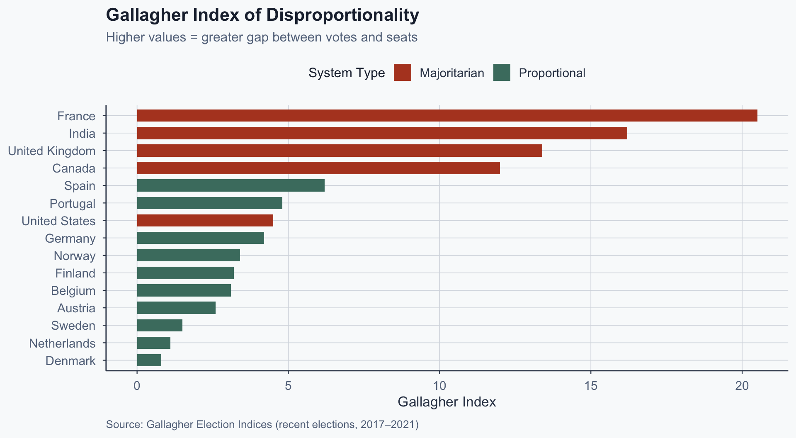
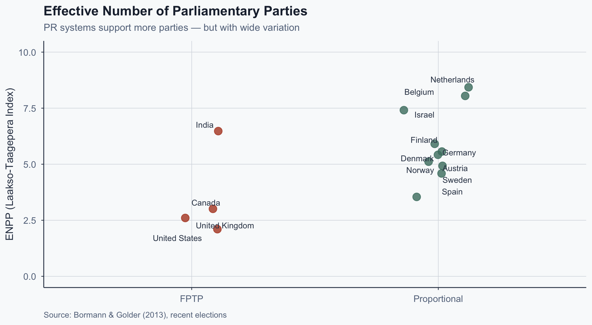
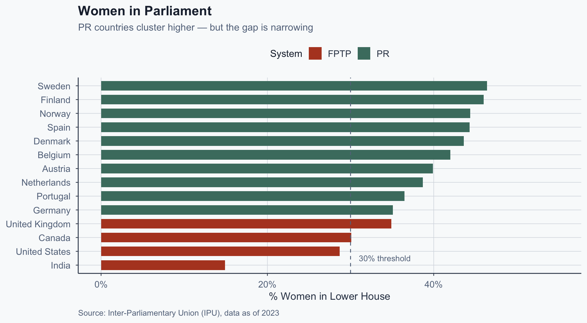
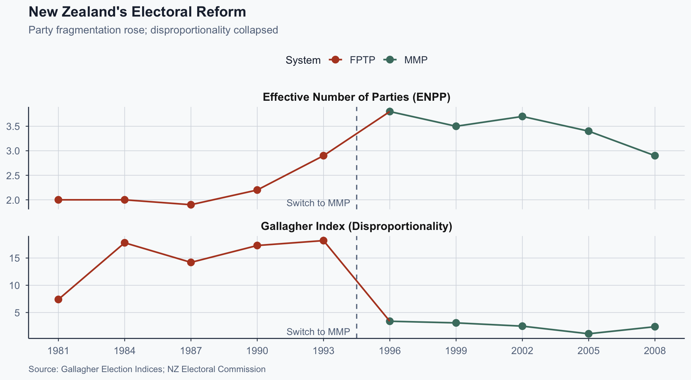

![]()
%%{init: {'flowchart': {'useMaxWidth': true, 'nodeSpacing': 30, 'rankSpacing': 50}, 'themeVariables': {'fontSize': '20px'}, 'theme': 'base'}}%%
flowchart TB
A["Electoral Systems"] --> B["Majoritarian"]
A --> C["Proportional"]
A --> D["Mixed"]
B --> E["FPTP<br/>UK, US, India"]
B --> F["Two-Round<br/>France"]
C --> G["Closed List<br/>Spain, Israel"]
C --> H["Open List<br/>Finland, Brazil"]
D --> I["MMP<br/>Germany, NZ"]
D --> J["Parallel<br/>Japan"]
Comparative Politics
Lecture 10: Electoral Systems
The Puzzle
The Central Question
Do electoral rules shape political outcomes, or do they merely reflect prior social forces?
This question will frame the entire lecture.
We will return to it at the end.
UK 1983: Votes vs. Seats

Why This Matters
- The Alliance’s 7.8 million voters elected 23 MPs
- The Conservatives governed with 42% of the vote
- The rules produced this outcome — not the voters
- Same votes, different rules → different parliament
Global Variation in Electoral Systems
- Majoritarian systems: UK, US, Canada, India, France
- Proportional systems: most of continental Europe
- Mixed systems: Germany, New Zealand, Japan
- No two democracies use identical rules
- Every design choice has political consequences
How do we make sense of this variation?
The Argument Ahead
If rules can produce outcomes this skewed, three questions follow — and each undermines the previous one:
- What are the different systems? (Taxonomy)
- What do they do to outcomes? (Consequences — but these may not be causal)
- Why did countries adopt the systems they have? (Origins — the question that forces us to rethink everything)
The Taxonomy
Two Concepts Do All the Work
District magnitude
How many seats are elected per district?
- 1 seat = winner-take-all (FPTP)
- Many seats = proportional allocation (PR)
Electoral threshold
Minimum vote share to win representation
- Natural threshold in FPTP: ~30–40% in competitive races
- Legal threshold in PR: typically 3–5%
First-Past-the-Post (FPTP)
- Single-member districts, plurality wins
- Used in: UK, US, India, Canada
- Simple rule: most votes in the district → seat
Key feature: A party can win 0 seats with 20% of the national vote if those votes are spread evenly across districts.
Photo: UK Parliament / Wikimedia Commons, CC BY 3.0
Proportional Representation (PR)
- Multi-member districts, seats allocated by vote share
- Closed list: party controls candidate order
- Open list: voters can choose among party candidates
Used across continental Europe: Netherlands, Sweden, Spain, Denmark, Finland, Austria, Belgium
Mixed-Member Proportional (MMP)
- Voters cast two ballots: district + party list
- District seats filled by FPTP
- List seats compensate for disproportionality
Used in: Germany (since 1949), New Zealand (since 1996)
Hybrid design — combines local representation with proportional outcomes

Sample ballot, 2017 Bundestagswahl. Public domain.
Electoral System Families
Quick Comparison
| System | District Magnitude | Threshold | Examples |
|---|---|---|---|
| FPTP | 1 | ~30–40% (natural, not legal) | UK, US, Canada |
| Closed-list PR | 5–150 | 3–5% (legal) | Spain, Israel |
| Open-list PR | 5–30 | 3–5% (legal) | Finland, Brazil |
| MMP | 1 + list | ~5% | Germany, NZ |
District magnitude is the single strongest predictor of system behavior (Taagepera & Shugart 1989).
Duverger’s Law
The Prediction
FPTP → two-party systems
PR → multiparty systems
Duverger (1954): “The simple-majority single-ballot system favours the two-party system.”
The closest thing comparative politics has to a law.
Two Mechanisms
%%{init: {'flowchart': {'useMaxWidth': true, 'nodeSpacing': 50, 'rankSpacing': 70}, 'themeVariables': {'fontSize': '20px'}, 'theme': 'base'}}%%
flowchart LR
A["FPTP<br/>Rules"] --> B["Mechanical<br/>Effect"]
B --> C["Small parties<br/>win few seats"]
C --> D["Strategic<br/>Effect"]
D --> E["Voters abandon<br/>losing parties"]
E --> F["Two-party<br/>equilibrium"]
Mechanical: votes convert to seats inefficiently for third parties
Strategic: voters and candidates anticipate this and adapt
Disproportionality by System Type

Effective Number of Parliamentary Parties

The Exceptions — and the Scope Condition
India is the key case. FPTP, but 6+ effective parties nationally. Why?
- Caste, linguistic, and regional cleavages produce distinct two-candidate contests in each state
- BJP vs. Congress in the Hindi belt; DMK vs. AIADMK in Tamil Nadu; TMC dominance in West Bengal
- Duverger works within each district — aggregation across heterogeneous districts produces national multipartyism
Same logic explains Canada (Bloc Québécois wins locally) and the UK (Lib Dems survive through geographic concentration).
The lesson: the law operates at the district level. The unit of analysis matters.
Consequences
Women’s Representation
The finding: PR systems consistently elect more women to parliament (Matland & Studlar 1996).
The mechanism: Party lists make diversification cheap — adding women to the list costs no incumbent a seat.
The caveat: FPTP systems with quotas (e.g., UK Labour) achieve similar results. The system is a transmission belt, not a root cause.
Women in Parliament: PR vs. FPTP

Policy Outputs
Iversen & Soskice (2006):
PR → center-left coalitions → higher welfare spending
The logic: Coalition math under PR makes redistributive parties pivotal — they are almost always needed for a majority.
Under FPTP, center-right parties can win outright, producing lower redistribution.
But Does It Replicate?
- Denmark and Sweden built large welfare states before modern PR consolidated
- New Zealand switched to MMP — policy outputs barely changed
- The correlation may reflect party strength, not system effects
If the same political forces that demand redistribution also demand PR, the correlation is not causal.
Exercise: Correlation or Causation?
Iversen & Soskice claim: PR → more welfare spending — 5 minutes
- State the causal claim in one sentence
- Identify two alternative explanations for the correlation
- What evidence would you need to distinguish cause from correlation?
Hint: Think about what determines whether a country adopts PR in the first place.
The Origins Question
Boix (1999): Strategic Adoption
Core argument: Ruling parties adopt PR when they face credible new entrants and fear losing under FPTP.
Sweden, 1909: Conservatives adopted PR not because they believed in proportional representation — but because a unified socialist bloc would beat them under plurality rules.
Electoral systems are chosen by politicians to survive.
Photo: Arild Vågen / Wikimedia Commons, CC BY-SA 4.0
Boix: The Logic
- Incumbent right-wing parties hold power under FPTP with a fragmented opposition
- Universal suffrage mobilizes a unified left (socialist/labor parties)
- Under FPTP, a unified left sweeps district after district — the right faces extinction
- The right calculates: guaranteed minority share under PR > probable wipeout under FPTP
- PR adopted as insurance, not as principle
Sweden, 1909: Conservatives held a comfortable majority. Projections under universal suffrage + FPTP showed Social Democrats winning outright. The right chose PR to survive — and it worked.
The Endogeneity Problem
%%{init: {'flowchart': {'useMaxWidth': true, 'nodeSpacing': 60, 'rankSpacing': 80}, 'themeVariables': {'fontSize': '22px'}, 'theme': 'base'}}%%
flowchart LR
A["Electoral<br/>Rules"] --> B["Party<br/>System"]
B --> C["Policy<br/>Outcomes"]
C --> D["Political<br/>Demands"]
D --> A
If rules shape outcomes, and outcomes shape demands for new rules, where do you break the loop to identify causation?
Three Implications
- Duverger tells us what systems do, not what they cause in equilibrium
- The welfare-spending correlation may reflect which parties were strong enough to demand PR
- Causal identification requires exogenous variation — colonial imposition, referenda, constitutional moments
Rokkan (1970): Social Cleavages
Alternative explanation: Electoral systems reflect pre-existing social cleavage structures.
- Homogeneous societies → FPTP suffices (no need for PR)
- Fragmented societies → PR needed to represent diversity
Are Rokkan and Boix rivals or complements? Complements: Rokkan explains why new parties emerge (cleavage demand); Boix explains how incumbents respond (strategic adoption). Neither is sufficient alone.
The Identification Problem
“To know what electoral rules cause, we need variation in rules that is independent of the political conditions that produced them.”
Such variation is rare. Where does it come from?
- Colonial imposition of metropolitan rules
- Public referenda (voter-driven, not elite-driven)
- Constitutional moments after crises
We need a case where the system changed for reasons outside normal party calculation. New Zealand’s 1993 referendum is one.
Exercise: Is Boix Right?
Two cases — 5 minutes
- Sweden (1907): Conservatives adopt PR when facing a rising socialist party
- United Kingdom: Never switched to PR despite persistent third parties
- Does Boix’s theory explain both cases?
- What is the scope condition — when should we expect reform?
- Would his theory predict electoral reform in the United States?
Application: New Zealand 1996
Why New Zealand?
- Switched from FPTP to MMP via public referendum (1993)
- Not elite party calculation — driven by voter dissatisfaction
- First MMP election: 1996
This is cleaner for causal identification: when voters choose the rules by referendum, the change is not driven by the same elite calculations that Boix describes — so we can more credibly isolate what the rules themselves do.
Photo: Donaldytong / Wikimedia Commons, CC BY-SA 3.0
What Changed
- More parties entered parliament (ACT, Greens, NZ First)
- Coalition government became the norm
- Māori representation increased through list seats
- Disproportionality dropped dramatically
What Didn’t Change
- Welfare retrenchment begun under FPTP continued under MMP
- Economic policy direction remained largely stable
- Two major parties still dominated coalition formation
This complicates Iversen & Soskice: the rules changed, but policy didn’t follow.
New Zealand Before and After MMP

Return to the Central Question
Do electoral rules shape political outcomes, or do they merely reflect prior social forces?
- New Zealand’s rules changed → representation changed (more parties, lower disproportionality, better Māori access)
- New Zealand’s rules changed → policy direction did not (welfare retrenchment continued, major-party dominance persisted)
The takeaway: Electoral systems are strong on representation, weak on policy, and never independent of the politics that produced them.
That is a testable claim — not a shrug.
References
References I
Boix, C. (1999). Setting the rules of the game: The choice of electoral systems in advanced democracies. American Political Science Review, 93(3), 609–624.
Bormann, N.-C., & Golder, M. (2013). Democratic electoral systems around the world, 1946–2011. Electoral Studies, 32(2), 360–369.
Duverger, M. (1954). Political parties: Their organization and activity in the modern state. Wiley.
Iversen, T., & Soskice, D. (2006). Electoral institutions and the politics of coalitions: Why some democracies redistribute more than others. American Political Science Review, 100(2), 165–181.
Lijphart, A. (2012). Patterns of democracy: Government forms and performance in thirty-six countries (2nd ed.). Yale University Press.
Matland, R. E., & Studlar, D. T. (1996). The contagion of women candidates in single-member district and proportional representation electoral systems. Journal of Politics, 58(3), 707–733.
References II
Norris, P. (2004). Electoral engineering: Voting rules and political behavior. Cambridge University Press.
Rokkan, S. (1970). Citizens, elections, parties: Approaches to the comparative study of the processes of development. Universitetsforlaget.
Taagepera, R., & Shugart, M. S. (1989). Seats and votes: The effects and determinants of electoral systems. Yale University Press.
Popescu (JCU) Comparative Politics Lecture 10: Electoral Systems